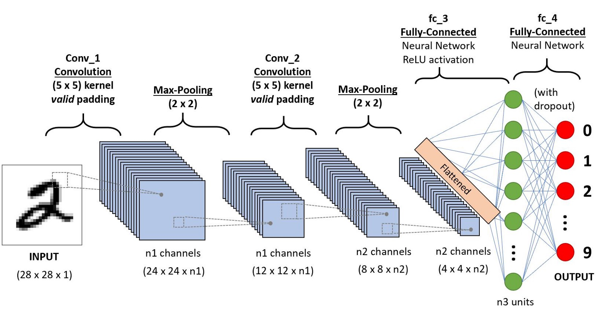
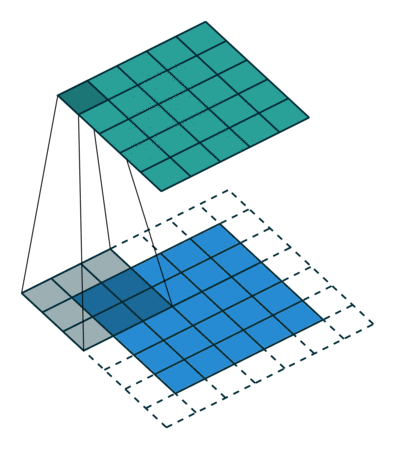

[深度学习] 什么是卷积神经网络

文章目录
前沿
人工智能正加快催化人机交互方面的应用，并树立了一个个令人惊叹的里程碑。无数的应用领域的正在发生翻天覆地的变化，计算机视觉也是其中领域之一。计算式视觉使得机器具备人类一样的类似行为，并可以运用知识去完成一些数字工程任务，诸如图像与语音识别、图像分析与分类、传媒娱乐、推荐系统以及自然语言处理等。
而随着时间的推移，深度学习在计算机视觉方面的进步已经得到了大量应用和完善，主要是通过一种特殊的算法——卷积神经网络（Convolutional Neural Network, CNN）。
卷积神经网络
什么是卷积
首先我们先来回顾一下卷积公式：
 ，它是分析数学中一种重要的运算。
，它是分析数学中一种重要的运算。
其物理意义是描述系统某一时刻的输出是由多个输入共同作用（叠加）的结果。或者卷积可以说成是一个函数（如：单位响应）在另一个函数（如：输入信号）上的加权叠加。 例如放在图像分析里，f(x) 可以理解为原始像素点(source pixel)，所有的原始像素点叠加起来，就是原始图了。而g(x)可以称为作用点，所有作用点合起来我们称为卷积核（convolution kernel）。卷积核也被称为滤镜（filter）。
卷积核上所有作用点依次作用于原始像素点后（即乘起来），线性叠加的输出结果，即是最终卷积的输出。其过程相当于使用滤镜扫描了一遍原始图像。
举例说明：蒸馒头的例子
楼下早点铺子生意太好了，供不应求，就买了一台机器，不断的生产馒头。
假设馒头的生产速度是 f(t) ，那么一天后生产出来的馒头总量为：
馒头生产出来之后，就会慢慢腐败，假设腐败函数为 g(t) ，比如，10个馒头，24小时会腐败： 10*g(t)
因此，第一个小时生产出来的馒头，一天后会经历24小时的腐败，第二个小时生产出来的馒头，一天后会经历23小时的腐败。
我们可以知道，一天后，馒头总共腐败了：
小结一下：
（1）原始图像通过与卷积核（滤镜）的数学运算，可以提取出图像的某些指定特征（features)。
（2）不同卷积核，提取的特征也是不一样的。
（3）提取的特征一样，不同的卷积核，效果也不一样。
卷积神经网络
卷积神经网络（Convolutional Neural Network, CNN）是一种深度学习算法，它可以以图像作为输入，从而挖掘图像中的各个维度的特征以提取出权重系数或偏离值，而达到区别它们的目的。也就是说，图像通过CNN运算可以学习到一种权值和偏差(wights and bias)。
与其他分类算法相比，CNN所需的预处理要低得多。在以前的传统方法中，过滤器（Filter）是手工设计并经过足够的训练而得到的，但CNN能够快速的通过学习得到这些过滤器/特性。CNN结构类似于人类大脑中的脑细胞结构，它的提出也是源于视觉皮层组织。单个神经元只在视野的一个被称为接受域的有限区域对刺激做出反应。这些区域的集合通过重叠从而覆盖整个视觉区域。
在对于手写体的中的数字识别实验中，我们可以通过CNN来训练模型，让模型对数字的识别准确率基本接近于100%。（具体实验可以查看深度学习中的Mnist教程，流程如下图）
 图1：CNN在识别手写字中的结构
关于图像
图像
图像(Image)，通常也成为图片，它可以是通过照相机或者扫描得来，也可以是通过数值绘画出来。
图像与矩阵
一个图像，其实就是一个用像素值表示的矩阵。图像的大小通常使用N*M表示，它表示图片具有N*M个像素点，而且N是表示的宽度（width）方向的像素点，M是高度（height）方向的像素点。而矩阵的大小通常用M*N表示，即M行（row）, N列（column）。例如 800*600的图像，其总共有480000个像素点，并且宽度方向是有800个像素，高度方向有600个像素点，其对应到矩阵是一个600*800的大小的矩阵。
图像的色彩
我们知道，红、绿、蓝（Red, Green, Blue）是我们的三原色（或三基色），任何色彩都可以使用它们表示出来（此处暂不论其他组合的基色）。任何一种基色都可以使用一个字节来表示，即2的8次方表示，即0-255数值表示，因此任何一个颜色都可以使用三种基色的数值组合而来。通常我们把三个基色在图像中称之为三个通道（或称为分量），如R通道，G通道和B通道。因此图像的颜色可以使用（R，G，B）来表示，如（0,0,0）为纯黑色，（255,0,0）为纯红色，（0,255,0）为纯绿色，（0,0,255）为纯蓝色，（255,255,255）为纯白色，（128，0，128）为紫色等等。
单个像素上的像素值（反映的是颜色的强度），就是RGB对应三个通道合成值，也可以理解成单个像素的值具有三个分量（R，G，B）。通常图像有灰度和彩色之分，灰度图片我们可以RGB三个值是相等的，彩色图片三个通道值是不完全相等的，如果相等了就是灰度图片。因此我们通常人为灰度图像只有一个通道，即只用一个像素值来表示。颜色图像可以看做是三个通道的叠加，如图所示：

CNN特征提取特性
特征提取过程
CNN 一般具有较好的特征提取功能，那么为什么CNN 会具有这种特性呢？我们在使用CNN处理输入的图像时，相当于使用一个滤镜（filter）对于原图进行了扫描，得到了一个新的且比原图小的图像。该小图像具备了卷积后的特性，且变小了，说明其具有一定压缩性，从而减小计算量。下图展示了特定的滤镜扫描原图像的过程。
1 2 3 4 |
#不同滤镜的选择，提出的特征是不一样的，本例中的滤镜是
1 0 1
Filter = 0 1 0
1 0 1 |

图2.滤镜扫描示意图
图3.采用特定滤镜扫描后的计算结果
 图4.图像的三个通道一起扫描时的示意图
图4.图像的三个通道一起扫描时的示意图
卷积层与平铺层区别
平铺层（Flatten），是指将矩阵按照一定的顺序铺开，从而将M*N的矩阵变成MN*1的向量，即将多维矩阵变成一维向量。 如图：
平铺层在做简单的图像分类时，兴许还能有些用，但在复杂图像处理时，就很难保证正确性。
平铺层特征提取时不用，因为它将图像的空间信息天然抛弃了，如像素点周围的空间像素值和其本身的像素值之间的关系在图像压平后就不存在了。
而卷基层保留了图像里的空间关系和时序关系，即便是通过滤镜扫描后，其关系依然存在，而且特征还具有增强效果。但平铺层在深度学习中常常与全连接层（Dense）配合使用，作为其输入应用。
文章作者 海萨
上次更新 2019-05-12
许可协议 MIT